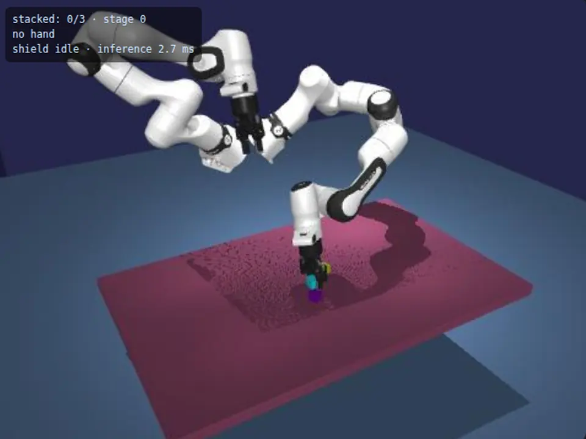

- of 72 test scenarios solved
- 7 to 21.5
- success gain (95% CI +0.10 to +0.30)
- +0.20
- of 40 runs touched a hand in the path
- 24 to 0
Robot learning · Siemens Healthineers Robotics & AI Hackathon · Oct 2026
AUTODIDACT: a robot learning loop that teaches itself
A learning loop for a two-arm Franka FR3 Duo in MuJoCo. It checks the demonstration data, trains a policy (ACT, SmolVLA), tests it, finds where it fails, requests demonstrations for exactly those cases, retrains, and only promotes the new model if it is statistically better. Team project, built in two days.
My part: I contributed across the data checks, the simulation twin, policy training and evaluation.
- MuJoCo
- ACT
- SmolVLA
- Imitation learning
- Python